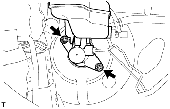
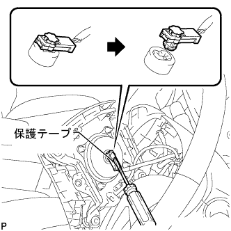
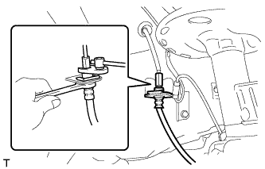
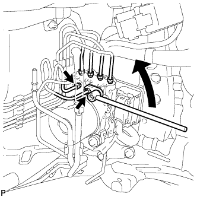
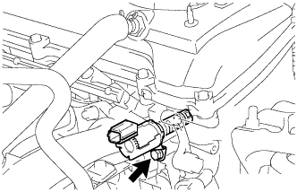

Brake Booster Assembly (Engine Type 2AZ-FE) Removal |
| 1. Disconnect Battery Negative Terminal |
Reference| 2. Remove Engine Cover Sub-assembly NO.1 |
 |
Remove the 2 nuts and engine cover assembly No.1.
| 3. Remove Front Wiper Arm Head Cap |
 |
Remove the 2 front wiper arm head caps.
| 4. Remove Front Wiper Arm & Blade Assembly RH |
 |
Remove the front wiper arm nut and front wiper arm & blade assembly RH.
| 5. Remove Front Wiper Arm & Blade Assembly LH |
 |
Remove the front wiper arm nut and front wiper arm & blade assembly LH.
| 6. Remove Hood to Cowl Top Seal |
 |
Disengage the 7 clips and remove the hood to cowl top seal.
| 7. Remove Front Side Panel Protector NO.1 LH |
 |
Disengage the pin and remove front side panel protector NO.1 LH.
| 8. Remove Cowl Top Ventilator Louver LH |
 |
Disengage the 11 claws and remove the cowl top ventilator louver LH as shown in the illustration.
| 9. Remove Front Side Panel Protector NO.1 RH |
 |
Disengage the pin and remove front side panel protector NO.1 RH.
| 10. Remove Cowl Top Ventilator Louver RH |
 |
Disengage the 5 claws and remove the cowl top ventilator louver RH as shown in the illustration.
| 11. Remove Windshield Wiper Motor & Link Assembly |
 |
Remove the 2 bolts and disconnect the windshield wiper motor & link assembly.
Disconnect the connector and clamp, and remove the windshield wiper motor & link assembly as shown in the illustration.
| 12. Remove Brake Master Cylinder Reservoir Filler Cap Assembly |
| 13. Remove Brake Master Cylinder Reservoir Strainer |
| 14. Drain Brake Fluid |
| 15. Remove Cowl Body Mounting Reinforcement RH |
 |
Remove the 3 bolts and remove the cowl body mounting reinforcement RH from the cowl top panel outer.
| 16. Remove Cowl Top Panel Outer |
 |
Disconnect the windshield deicer wire harness connector and disengage the 3 clamps, and detach them from the cowl top panel outer. (w/ Cold Area Specification)
 |
Disengage the clamps of the heater air duct splash shield seal No.2 and water guard plate RH, and bend each as shown in the illustration.
 |
Remove the 8 bolts and the cowl top panel outer.
| 17. Remove Brake Master Cylinder Sub-assembly |
 |
Disconnect the warning switch connector from the reservoir and disengage the clamp.
 |
Using a union nut wrench (10mm), disconnect the 2 brake tubes from the brake master cylinder assembly.
 |
Remove the 2 nuts and the brake master cylinder assembly.
Remove the O-ring from the brake master cylinder assembly.
| 18. Remove Steering Wheel Cover Lower NO.3 |
 |
Disengage the claws and remove the steering wheel cover lower No.3.
| 19. Remove Steering Wheel Cover Lower NO.2 |
 |
Disengage the claws and remove the steering wheel cover lower No.2.
| 20. Remove Horn Button Assembly |
 |
Using a torx socket wrench (T30), loosen the 2 torx bolts until they turn freely.
Using needle-nose pliers, pull out the 2 torx bolts.
 |
Pull the horn button assembly toward the rear of the vehicle.
 |
Using a thin-bladed screwdriver with its tip wrapped with protective tape, release the lock of the airbag connector.
Disconnect the airbag connector and horn connector, and remove the horn button assembly.
| 21. Remove Steering Wheel Assembly |
Operate the tilt and telescopic mechanisms and fix the steering column assembly in its most extended and highest position.
 |
Remove the nut and put matchmarks on the steering wheel assembly and steering column assembly.
 |
Using SST, remove the steering wheel assembly.
| 22. Remove Steering Column Cover |
Release the tilt lever.
 |
Push the steering column cover (lower side) from the left and right to disengage the 4 claws.
 |
Insert a finger through the tilt lever opening of the steering column cover (lower side) and disengage the claw.
 |
Disengage the 2 claws and remove the steering column cover (lower side).
 |
Disengage the 2 claws and pins, and remove the steering column cover (upper side).
| 23. Remove Instrument Panel Under Cover Sub-assembly NO.1 |
| 24. Remove Instrument Panel Airbag Assembly LWR NO.1 |
 |
Remove the 4 bolts.
 |
Detach the instrument lower airbag No.1 from the 6 claws and 2 guides.
 |
Disconnect the connector and remove the instrument lower airbag No.1.
| 25. Remove Brake Pedal Return Spring |
 |
Remove the brake pedal return spring from the brake pedal support.
| 26. Disconnect Brake Master Cylinder Push Rod Clevis |
Remove the clip and push rod clevis pin, and disconnect the brake master cylinder push rod clevis from the brake pedal.
| 27. Remove Brake Master Cylinder Push Rod Clevis |
Loosen the lock nut, and remove the brake master cylinder push rod clevis and lock nut.
| 28. Disconnect Check Valve to Connector Tube Hose |
 |
Slide the clip and disconnect the check valve to connector tube hose from the brake booster assembly.
| 29. Disconnect Brake Tube |
 |
Using a union nut wrench (10mm), disconnect the brake tube from the front brake flexible hose No.1 (RH side).
 |
Using a union nut wrench (10mm), disconnect the 2 brake tubes from the brake actuator.
 |
Disengage the 2 clamps and disconnect the brake tube from the body.
| 30. Remove Camshaft Timing Oil Control Valve Assembly |
 |
Remove the bolt and remove the camshaft timing oil control valve assembly from the cylinder head.
| 31. Remove Brake Booster Assembly |
 |
Remove the 4 nuts and the brake booster assembly.
Remove the brake booster gasket from the brake booster assembly.